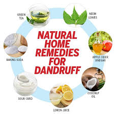

How to Treat Dandruff Naturally and Permanently
Dandruff is more than just an itchy scalp; it is often a sign of a fungal imbalance or extreme dryness. For those with natural hair, many "anti-dandruff" shampoos in the market are too harsh, stripping away moisture and causing hair to break. Here is how to clear your scalp naturally.
1. Understand the Root Cause
In our tropical climate, sweat and product buildup can create the perfect environment for dandruff. If you are wearing braids or wigs for too long without washing your scalp, the buildup becomes a breeding ground for flakes.
The Power of Honey & Herbs
Honey is a natural humectant and antimicrobial agent. Our Honey Shampoo Set (available in our shop) uses these properties to kill dandruff-causing fungi while keeping the scalp hydrated.
2. Use Apple Cider Vinegar (ACV) Rinses
ACV helps balance the pH of your scalp. Mix one part ACV with three parts water and pour it over your scalp after shampooing. Let it sit for 5 minutes before rinsing with cool water. This closes the hair cuticles and kills bacteria.
3. Avoid Heavy Greases
Many people react to dandruff by applying thick hair oils or "hair foods." This often makes the problem worse by clogging the pores. Switch to a light, herbal-infused serum like the Hotfro Growth Booster which nourishes the scalp without suffocation.
Stop the Itch Today
Our Honey Shampoo is specifically formulated for Ghanaian natural hair to clear dandruff while promoting growth.
Order the Scalp Kit via WhatsApp